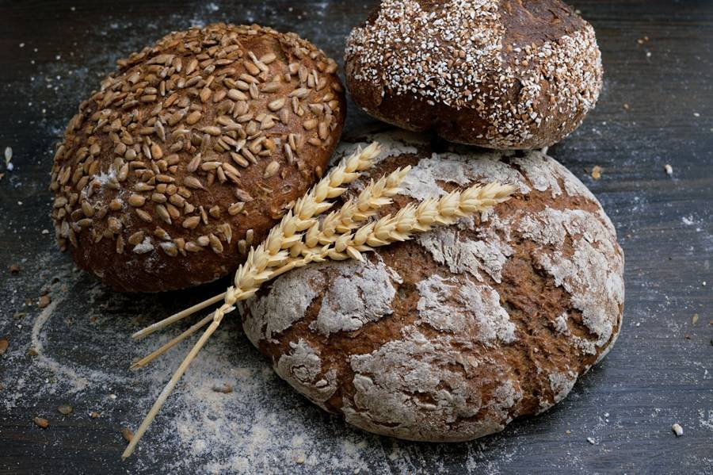

Welcome to Maison Sarah, a small neighborhood bakery where every loaf and pastry is handmade and baked fresh every morning by Sarah and her team.

Find us
12 Rue des Boulangers75011 Paris, France
Welcome to Maison Sarah, a small neighborhood bakery where every loaf and pastry is handmade and baked fresh every morning by Sarah and her team.
